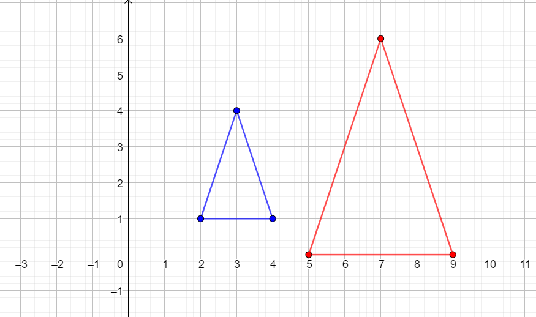

Esercizio 1
Scrivere l'espressione della trasformazione \(T\) che ruota un generico punto \(z\) del piano complesso di \(\dfrac{\pi}{3}\) radianti rispetto al punto \(a = -3 + 5i\)
Esercizio 2

Il triangolo di vertici \(z_{1}\), \(z_{2}\), \(z_{3}\), rappresentato in blu, viene trasformato dalla trasformazione \(T\) nel
triangolo rosso, avente vertici \(w_{1}\), \(w_{2}\), \(w_{3}\).
-
Scrivere i numeri complessi \(z_{1}\), \(z_{2}\), \(z_{3}\), \(w_{1}\), \(w_{2}\), \(w_{3}\).
-
La trasformaizone \(T\) è una dilatazione di fattore \(k\) rispetto al punto \(a\).
Individuare a partire dalla figura
-
il numero complesso \(a\), rispetto al
quale è effettuata la dilatazione
-
il fattore di dilatazione \(k\)
-
Scrivere l'espressione dalla quale è definita la trasformazione \(T\).